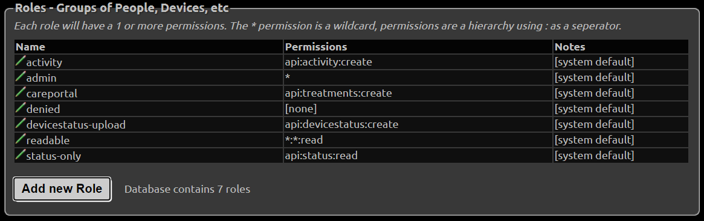

Admin Tools
Subjects and Roles
Note: authentication tokens are also called access tokens
Changing API_SECRET
If you change your API_SECRET all your tokens will change. Make sure you update your devices and send the new token link to those you allowed to access your Nightscout
To access the Authentication options, click the settings panel (three horizontal bars in the top right) in your website and select Admin Tools. The Authentication options are at the top of the Admin page. (Note: you must be logged in with your API SECRET to access these tools.)
{kind=link}
You will see several predefined roles:
{kind=link}
Roles
admin: full accesscareportal: can view the site and make CarePortal/treatment entriesreadable: read-only access; no ability to make CarePortal/treatment entries. This user CAN see reports and profile information.denied: no access (this role only works if theAUTH_DEFAULT_ROLESsetting is alsodenied. You can’t have a site that is readable to everyone and create a “denied” token for a specific user.)devicestatus-upload: used by devices
Hint
There is currently no way to limit a user so that he cannot view the Reports section if he has access to the site. Time/date-based roles are not currently possible.
Create a Token
Click the “Add New Subject” button.

Fill in the name of the subject and the “role” you are giving this subject (from the list of roles shown above). Note you should only grant the
readablerole for users who do not need to save or edit data in Nightscout. For example, you might want to share the site to a school nurse, but not have him able edit the data.
{kind=link}
An
admintoken is necessary for AAPS to upload using the API V3.
{kind=link}
Click save.
The token will be shown. You can use it in two different ways:
Copy the token URL (right-click on it in the browser and select the option to copy the link address) and provide it to the user (e.g., paste it into an email). If the user enters the entire URL (with token), the token will be in effect.
Copy the token string (in the example below
school-a595d5f0aeff64c0) and use it for authentication at site opening, instead of the API secret (Nightscout minimum version 14.1.0 required).
{kind=link}
You can also add the token to the site URL to authenticate using a token. Your site link with token will look like this:
https://yoursitename.yourplatform.com/?token=school-a595d5f0aeff64c0
Anybody with this link can use your Nightscout with the role defined for this token.
Hint
If the user copies only your core URL into a browser, and your site is readable by default, the token will be bypassed. (Possible strategies to ensure the user puts the role-based URL into a browser include using a tinyurl or bit.ly.)
You can edit a subject by clicking the edit icon, making changes, and saving.
You can delete a subject by clicking the red
Xicon to remove the subject from the list.
See how to setup your downloaders (followers) with a secured site.
Database Maintenance
If you use a small or a free database (like MongoDB Atlas), it will require maintenance as nothing in Nightscout is setup to perform cleanup and unless you planned for a larger size database, it will eventually fill-up.
Warning
Make sure you leave dbsize visible on your page to keep it under control.
This panel will give access to basic maintenance actions on various database collections.
Mongo status Database
Your status database contains battery, pump, … extra information as those defined in devicestatus that you can safely delete when necessary.
{kind=link}
When it comes to treatments and entries, deleting data is something you need to carefully evaluate if you like Nightscout to be the main repository for your history.
Mongo treatments Database
{kind=link}
Mongo entries Database
{kind=link}
Remove future items from Database
Future treatments and entries generated by an incorrect time zone, daylight saving time change, or any other mistake can completely block your site. Using this feature will purge the database of these unwanted values automatically. Detected issues will appear in Database contains x future records and should be fixed.
{kind=link}